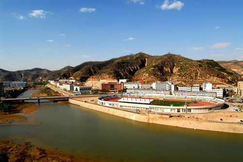

科技事业
2018年，延安市各类科技计划项目181项，登记市级科技成果86项，技术合同成交总金额24309.8万元。全年专利申请受理量1143项，其中：发明292项；专利申请授权量669项，其中：发明43项。发放知识产权相关资料6000份，接待群众咨询800人次。
教育事业
截至2018年末，延安市拥有各类中小学363所，其中：普通中学112所，普通小学251所。普通中学在校学生12.99万人；普通小学在校学生21.81万人。特殊教育学校5所，在校学生372人。幼儿园556所，在园幼儿11.95万人。

延安大学
文化事业
截至2018年末，延安市共有艺术表演团体13个，从业人员755人；文化馆（站）133个，从业人员595人；公共图书馆13个，从业人员172人，藏书101.77万册；艺术表演场馆15个，从业人员1500人。全市创作戏剧作品11部，曲艺、小品45个，歌曲55首。全市拥有综合档案馆14个，馆藏档案107.44万册；新农村建设档案工作示范村29个，已建立村级档案室102个。全年《延安日报》发行349期、3.60万份。电视台共播出电视新闻58242小时；共播广播新闻64018小时。电影公益放映3.2万场次，行政村放映覆盖率100%。全市广电网络县、乡镇覆盖率达100%，数字电视用户达到27.27万户，其中当年新发展3.27万户。全市电视节目综合人口覆盖率99.64%，广播节目综合人口覆盖率99.68%。
体育事业
截至2018年末，延安市拥有体育场馆28个，建成全民健身广场1388个，建立了61个全民健身辅导站点，社会体育指导员3927人。全市范围内建成了115条全民健身路径、58个晨晚练点，为群众健身创造了良好条件。全市经常参加体育锻炼的人数达到75万人。全市体育彩票销售网点328个，共销售体育彩票5.89亿元，筹集公益金3200万元。
卫生事业
截至2018年末，延安市共有卫生机构3029个（含诊所、卫生所、医务室），医院、卫生院222个；床位1.32万张，其中：医院、卫生院1.26万张；卫生技术人员1.40万人，其中：医院、卫生院1.26万人。全市拥有村卫生室2412个，乡村医生和卫生员2441人。全市共接呼救电话2.2万次，出动急救车辆2.2万辆次，接回伤病人员1.5万人。
劳动就业
2018年，延安市城镇新增就业人员1.60万人，城镇登记失业率3.50%。
社会保障
2018年，延安市城乡居民基本养老保险参保人数93.88万人；城镇职工基本养老保险参保人数26.19万人；城镇基本医疗保险参保人数220.36万人，其中城镇职工基本医疗保险参保人数31.62万人。
社会福利
截至2018年末，延安市拥有社会福利院8个，拥有床位1970张；拥有敬老院38个。全年城市低保对象1.58万户、3.30万人，保障标准为555元/月；农村低保对象3.62万户、8.24万人，保障标准为4020元/年。
环境保护
2018年，延安市城区空气质量优良天数达到315天，发布空气质量信息播报365次，延安环保信息网发布各类信息1565条。全年累计出动环境执法人员18388人次，检查各类企业近3670家次，查处各类环境违法案件510起。持续开展“绿盾”自然保护区监督检查专项行动和自然保护区勘界立标工作，核实自然保护区遥感监测点位27个。